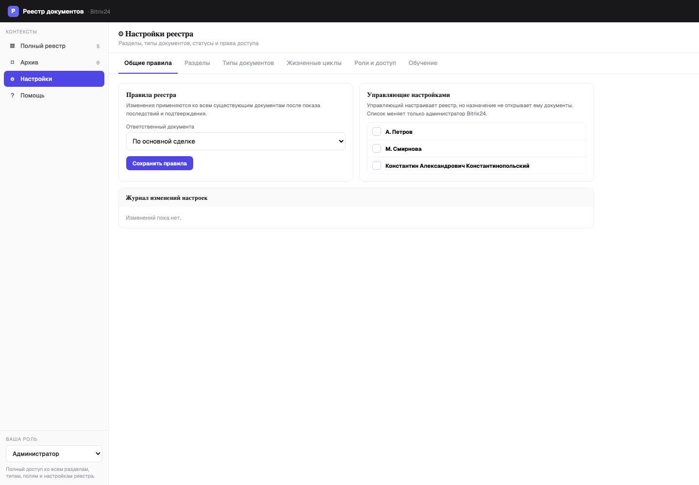
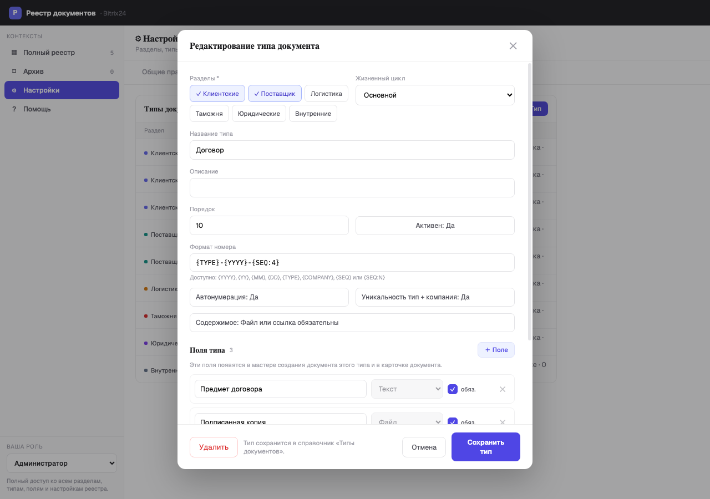
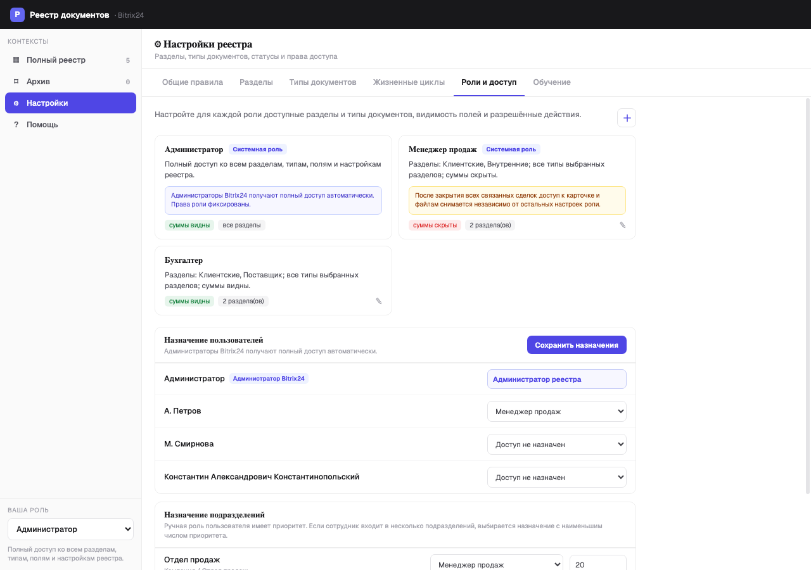
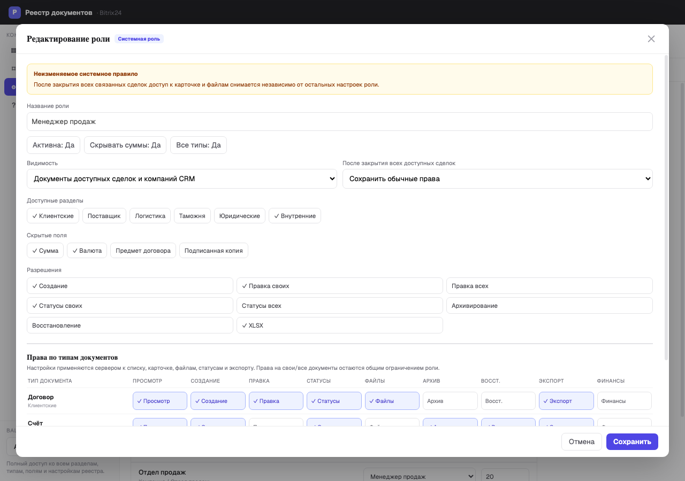

Краткая инструкция администратора Bitrix24 и назначенного управляющего настройками.
| Администратор Bitrix24 | Полный доступ к настройкам; назначает управляющих. Его системная роль защищена от изменения. |
|---|---|
| Управляющий настройками | Настраивает справочники, роли и правила. Назначение само по себе не открывает документы. |
| Обычная роль | Видит и изменяет документы только в пределах прав CRM и политики реестра. |
Все настройки принадлежат конкретному порталу. Изменения одного клиента Marketplace не влияют на другой портал.

Удалённое поле исчезает из карточек, поиска и обычного XLSX. Старые значения остаются только в истории под прежним названием и не возвращаются при создании нового похожего поля.


| Видимость | Только свои документы либо документы доступных в CRM сделок и компаний. |
|---|---|
| Ответственный | По основной сделке, все ответственные связанных сделок или ручное назначение. |
| Закрытые сделки | Скрыть; оставить просмотр и скачивание; сохранить обычные права. |
| Финансы | Доступ к суммам и итогам задаётся по роли и типу документа. |
Одна доступная сделка даёт доступ к общему документу, но сведения о недоступных сделках не раскрываются. Пока есть доступная открытая сделка, ограничение закрытия не применяется. Настройки реестра никогда не расширяют права CRM.

Перед выпуском на рабочий портал выполните приёмку на тестовом портале: роли, закрытые сделки, обязательные поля, удалённые поля, финансы, XLSX, версии, архив, три placement и повторную установку.
Редакция: 22.09.2026.